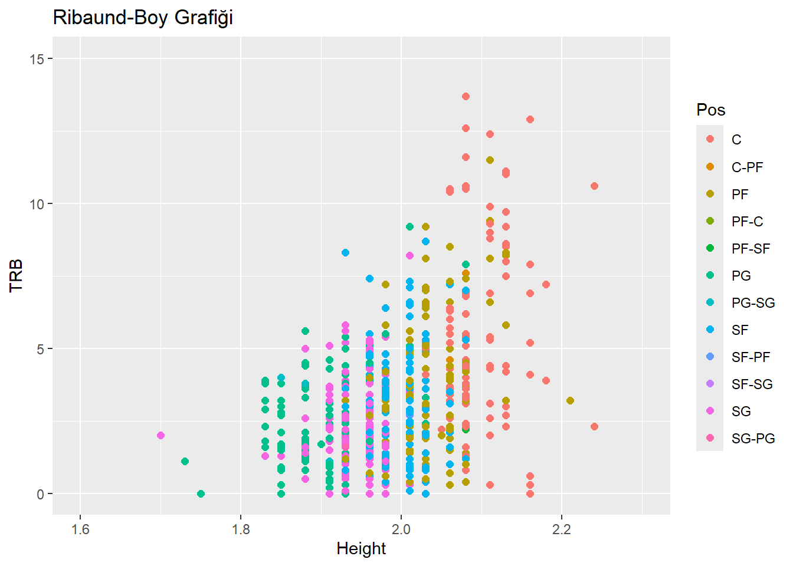

Projemizle ilgili güncellemelerden haberdar olmak için bu alanı takip edin.
1 Proje Genel Bakışı ve Kapsamı
xxxxxx
2 Veri
xxxxxx
2.1 Veri Kaynağı
https://www.basketball-reference.com/leagues/NBA_2024_totals.html sayfasından csv formatı ile çekilmiştir. Ancak ilişki kuracağımız alt başlıklardan kilo ve boy verisi bu data setinde verilmemiştir.
https://www.nba.com/players sayfasından oyuncuların boy ve kilo verisi alınmış olup ana veri setine yeni sütun olarak eklenmiştir.
2.2 Veri Hakkında Genel Bilgiler
xxxxxx
2.3 Tercih Sebebi
xxxxxx
2.4 Ön İşleme
Bazı veri setleri, analize hazır değildi. Veri setlerini kullanabilmek için önce ön işlemeye ihtiyaç duyduk. Proje konumuz NBA oyuncularının sezondaki çeşitli istatististiklerine dayanıyordu ancak hazır veri setleri yoktu. Bu yüzden NBA’in sitesinden yayınladığı istatistikleri projemizde kullanabilmek için veri seti yani .csv formatında excell dosyalarına çevirdik.
https://www.nba.com/players sayfasından ise 572 oyuncunun boy, kilo verisini ana veri setine yeni kolon olarak ekledik.
3 Analiz
Bu analizde NBA 2023-24 sezonundaki ilk 50’ye giren oyuncuların verileri kullanmıştır. İncelenecek alt başlıklar aşağıdaki gibidir:
3.1 Rebound - Boy
# Veri setini yüklemeveri <-read.csv(file ="nba_dataset.csv", head =TRUE, sep=";")boy_veri <- veri[1:150,]#veriyi TRB sütununa göre sıralamarebounds_data <- veri[order(boy_veri$TRB, decreasing =TRUE),]#TRB sütununa göre sıralanan veriden ilk 50sini almarebounds_top50 <- rebounds_data[1:50,]TRB <- rebounds_data[,c("Player", "TRB")]Height <- rebounds_data[,c("Player", "Height")]#print(TRB,row.names = FALSE)library(ggplot2)library(tidyverse)
── Attaching core tidyverse packages ──────────────────────── tidyverse 2.0.0 ──
✔ dplyr 1.1.4 ✔ readr 2.1.5
✔ forcats 1.0.0 ✔ stringr 1.5.1
✔ lubridate 1.9.3 ✔ tibble 3.2.1
✔ purrr 1.0.2 ✔ tidyr 1.3.1
── Conflicts ────────────────────────────────────────── tidyverse_conflicts() ──
✖ dplyr::filter() masks stats::filter()
✖ dplyr::lag() masks stats::lag()
ℹ Use the conflicted package (<http://conflicted.r-lib.org/>) to force all conflicts to become errors
Warning: Removed 59 rows containing missing values or values outside the scale range
(`geom_point()`).

Bu grafikte boy arttıkça rebound sayısının arttığını gözlemledik. Beklenen sonuç da buydu. Ancak grafikten çıkarılması gereken bir diğer sonuç ise 1.9 - 2.1 uzunluğundaki oyuncuların 60 TRB değerinin altında kalan kümesi. Bu oyuncular uzun olmasına rağmen diğer oyunculara göre düşük performans sergilemişler. Bir sonraki başlıkta bu kümenin yaş ve kilo ile grafiğine bakıp bunların sebep olma ihtimalini inceleyeceğiz.
3.2 Block sayısı - Boy
3.3 Asist - Yaş
3.4 Asist/Top kaybı - Yaş
. . .
3.5 Keşifsel Veri Analizi
Keşifsel veri analizi, veri setlerini inceleyerek içerdikleri bilgiyi anlamak ve veri hakkında sezgisel bir anlayış geliştirmek için kullanılan bir süreçtir. Bu süreç, veri setlerinin yapılarını, eğilimlerini, ilişkilerini ve desenlerini keşfetmeyi amaçlar.
Projeye başlamadan önce inelediğimiz veri setleri hakkında bazı beklentilerimiz vardı. Mesela boyu uzun olan oyuncuların rebound ortalaması daha yüksek olmalıydı. Alt başlıkları bu beklentilerimiz üzerine oluşturduk. Beklentimizi kanıtlamak bir amaçken bir yandan da bu beklentilerimizi şaşırtacak çeşitli oyuncular olacağının farkındaydık. Ne de olsa NBA :) Bu da bizlere outliersları gösterecekti.
Veri keşfi ve gözlemi yaptıktan sonra kullanacağımız veri setlerini bulup incelemeye başladık. Proje için inceleyeceğimiz hedef kitlemizi belirledik ( 23-24 Sezonu, en iyi ilk 50 oyuncu ).
Sonrasında Veri görselleştirme ile veriyi daha okunur kılmaya çalıştık.Bunun için incelediğimiz veriye göre çeşitli plotlar seçmeliydik. En optimum plotu seçmeye gayret gösterdik. (Modelleme öncesi analiz)
Keşifsel modelleme üzerinde çok zaman kaybetmedik. Çünkü R studio veri için en optimum yani en uygun plotu seçenek olarak sundu.
Daha sonrasında sonuçları ilgili başlıkların altında paylaştık.
3.6 Trend Analizi
/chatgptden baktım bunu uygularken tekrar konusalım/ Trend analizi, belirli bir zaman dilimindeki veri setlerindeki uzun vadeli eğilimleri belirlemek için kullanılan bir analiz yöntemidir. Bu analiz, veri setindeki değişkenlerin zamanla nasıl değiştiğini inceleyerek gelecekteki davranışlar hakkında tahminler yapmaya yardımcı olur.
Trend analizinde genellikle zaman serisi verileri kullanılır. Temel olarak, zaman serisi verileri, belirli bir zaman diliminde belirli aralıklarla ölçülen veya gözlenen verilerdir (örneğin, aylık satış rakamları, günlük hisse senedi fiyatları). Bu veriler, bir trendin varlığını ve bu trendin ne yönde olduğunu belirlemek için analiz edilir.
Trend analizi genellikle şu adımları içerir:
Veri Görselleştirme: Zaman serisi verileri grafiğe dökülür. Bu, verinin nasıl davrandığını görsel olarak görmemize olanak tanır. Grafik üzerinde belirli bir eğilim olduğu gözlemlenebilir. Trendin Belirlenmesi: Veri setindeki eğilimin ne olduğunu belirlemek için çeşitli istatistiksel yöntemler kullanılır. Bu, veri setindeki değişkenliğin sabit bir eğilimle artıp artmadığını veya azaldığını belirler. Trendin Uygun Modellemesi: Veri setinin yapısına ve belirlenen trende bağlı olarak uygun bir model seçilir. Doğrusal, üstel veya polinomiyal trendler gibi farklı modeller kullanılabilir. Trendin Tahmin Edilmesi: Belirlenen trend modeli kullanılarak gelecekteki değerler tahmin edilir. Bu, trendin devam edip etmeyeceği veya tersine dönüp dönmediği hakkında fikir verebilir. Trend analizi, çeşitli endüstrilerde pazar trendlerini, tüketici davranışlarını, finansal piyasaları ve daha fazlasını anlamak için kullanılır. Örneğin, bir şirketin satışlarını analiz ederek gelecekteki satış trendlerini tahmin etmek veya bir yatırımcının belirli bir hisse senedinin fiyatının gelecekteki trendini belirlemek için trend analizi yapılabilir.
3.7 Model Uydurma
chtagptden aldım bu aşamaya geldıgımızde tekrar konusalım Model uydurma (fitting), istatistik ve makine öğrenimi alanlarında bir modelin veriye uyum sağlaması veya veriyi en iyi şekilde açıklaması anlamına gelir. Bu, modelin gözlemlenen verilere ne kadar iyi uymakta olduğunu ifade eder.
Model uydurma genellikle şu adımları içerir:
Model Seçimi: İncelenen veri seti için uygun bir model seçilir. Bu model, veri setinin yapısına ve hedeflenen sonuca bağlı olarak belirlenir. Örneğin, doğrusal regresyon, lojistik regresyon, karar ağaçları, destek vektör makineleri gibi çeşitli modeller arasından bir seçim yapılabilir.
Model Parametrelerinin Belirlenmesi: Seçilen modelin parametreleri belirlenir veya tahmin edilir. Bu parametreler, modelin veriye ne kadar iyi uyduğunu belirler. Bazı modellerde bu parametreler manuel olarak ayarlanabilirken, bazıları otomatik olarak ayarlanır.
Model Uydurma: Model, veri setine uydurulur. Bu, modelin gözlemlenen verilere ne kadar iyi uyduğunu ifade eder. Modelin parametreleri, veri setindeki gözlemlenen değerlerle uyumlu hale getirilir.
Model Değerlendirme: Uydurulan modelin performansı değerlendirilir. Bu, modelin ne kadar iyi olduğunu ve tahmin yeteneğini belirler. Doğruluk, hassasiyet, belirlilik katsayısı gibi metrikler kullanılarak değerlendirme yapılır.
Model uydurma, veri setindeki desenleri ve ilişkileri açıklamak ve gelecekteki davranışları tahmin etmek için kullanılır. İyi bir model, veri setindeki değişkenliği ve yapıyı doğru bir şekilde yakalar ve bu sayede gelecekteki değerlerin tahmininde daha doğru sonuçlar verir. Ancak model uydurma sürecinde aşırı uydurma (overfitting) riski de vardır, bu da modelin eğitim verilerine çok iyi uyması ancak genelleme yapma yeteneğinin azalması anlamına gelir. Bu nedenle, modelin aşırı uydurma yapmaması için düzenleme teknikleri ve doğrulama yöntemleri kullanılır.